MLT End Term30 questions50 marks14 SA · 13 MCQ · 3 MSQImprovement / forenoon / QDD2
Elapsed 00:00
Q1MCQ3 marks
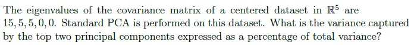
80%
60%
20%
15%
Q2MCQ3 marks
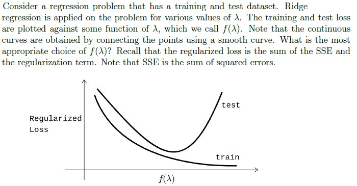
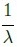
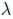
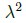
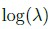
Q3MCQ3 marks
Match the characteristics given below with the appropriate ensemble technique. 1. Decision stumps 2. Deep decision trees 3. Parallel execution 4. Sequential execution
Bagging → (2), (3); Boosting → (1), (4)
Bagging → (1), (4); Boosting → (2), (3)
Bagging → (1), (3); Boosting → (2), (4)
Bagging → (2), (4); Boosting → (1), (3)
Q4MCQ3 marks
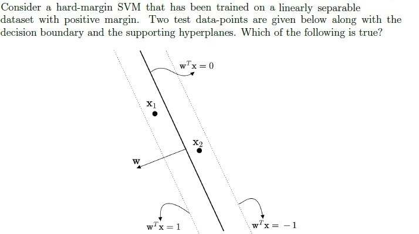
The predicted labels for x1 and x2 are 1 and −1 respectively.
The predicted labels for x1 and x2 are −1 and 1 respectively.
The predicted label for both data-points is 1.
The predicted label for both data-points is −1.
Q5MCQ3 marks
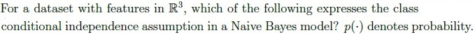
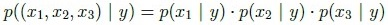
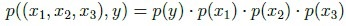
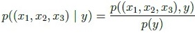
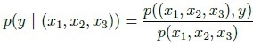
Q6MCQ3 marks
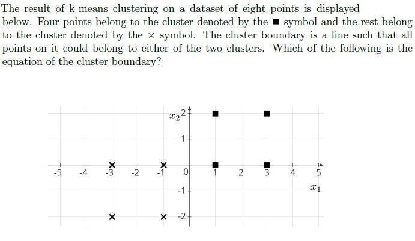
2x1 + x2 = 0
x1 − 2x2 = 0
x1 + x2 = 0
x1 + 2x2 = 0
Q7SA3 marks
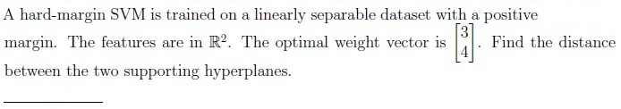
Q8SA3 marks
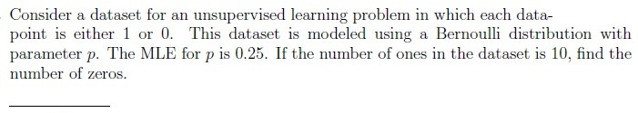
Q9SA3 marks
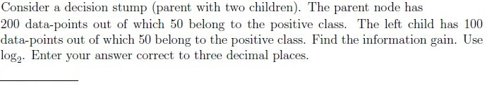
Q10MSQ3 marksselect all that apply
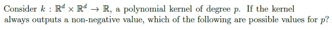
2
4
3
5
Q11MSQ3 marksselect all that apply
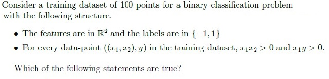
The dataset is linearly separable with a positive margin.
The perceptron algorithm will terminate after a finite number of iterationswhen trained on this dataset.
The dataset is linearly separable, but the margin may be zero.
The dataset is not linearly separable.
Q12MSQ3 marksselect all that apply
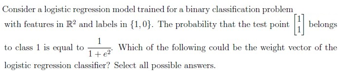
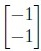
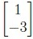
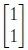
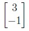
Comprehension passage - the questions below it refer to this
Based on the above data, answer the given subquestions.
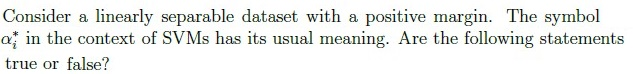
Q13MCQ1 mark
The weight vector output by the perceptron algorithm on this dataset can be expressed as a linear combination of the data-points where the coefficients of the linear combination are integers.
TRUE
FALSE
Q14MCQ1 mark
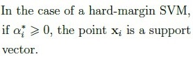
TRUE
FALSE
Q15MCQ1 mark
If a soft-margin SVM is trained on this dataset, the optimal weight vector it returns will be the same as the one returned by a hard-margin SVM, irrespective of the value of the hyperparameter C.
TRUE
FALSE
Comprehension passage - the questions below it refer to this
Based on the above data, answer the given subquestions.
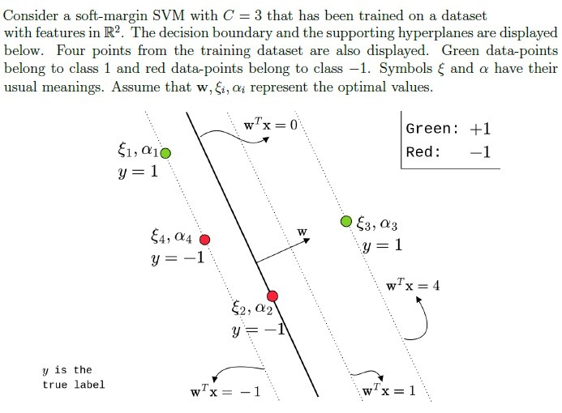
Q16SA0.5 marks
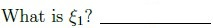
Q17SA0.5 marks
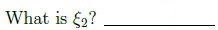
Q18SA0.5 marks
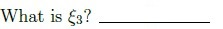
Q19SA0.5 marks
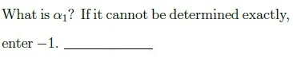
Q20SA0.5 marks
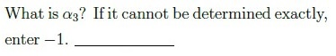
Q21SA0.5 marks
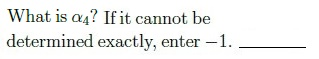
Comprehension passage - the questions below it refer to this
Based on the above data, answer the given subquestions.
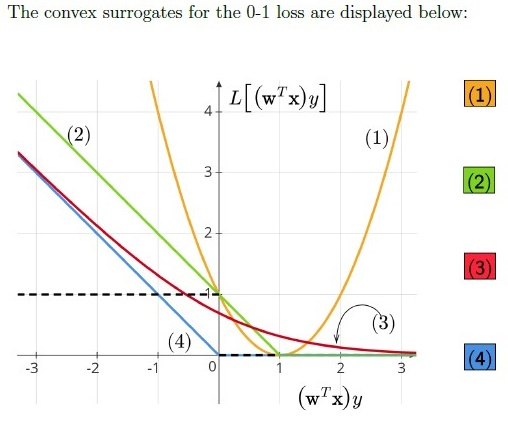
Q22SA0.5 marks
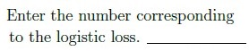
Q23SA0.5 marks
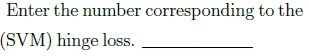
Q24SA0.5 marks
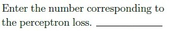
Q25SA0.5 marks
Enter the number corresponding to the squared loss._______________
Q26MCQ1 mark
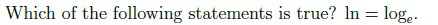
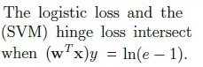
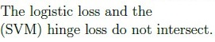
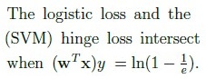
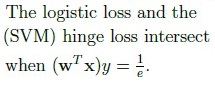
Comprehension passage - the questions below it refer to this
Based on the above data, answer the given subquestions.
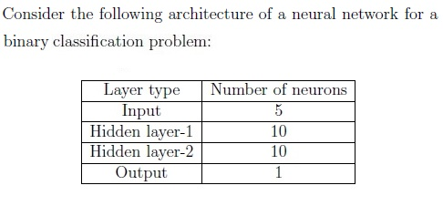
Q27SA1 mark
How many learnable parameters does this network have? Ignore the biases in the computation.
Q28MCQ1 mark
What is the most appropriate choice of activation function for the output layer if the binary cross-entropy loss is used?
Auto-generated summary from the source site. Handy as a checklist; the lessons above explain each idea from scratch.
Here’s a structured summary of core topics, concepts, principles, and equations essential for the exam, followed by Mermaid knowledge graphs to visualize relationships.
Core Topics & Concepts
1. Principal Component Analysis (PCA)
Key Idea: Dimensionality reduction by projecting data onto directions (principal components) of maximum variance.
Eigenvalues of Covariance Matrix:
Total variance = sum of eigenvalues.
Variance captured by top k PCs = (sum of top k eigenvalues) / (total variance).